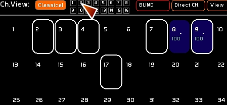
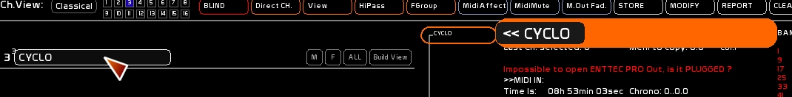
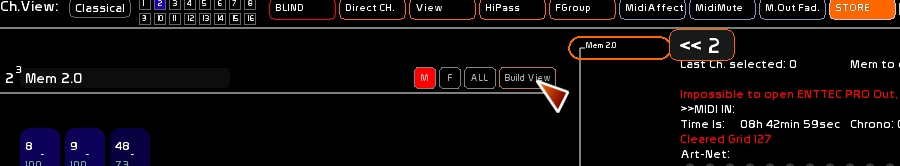

Table des matières
Channels Views
Les [Channels Views] permettent de personnaliser les affichages circuits et sont débrayables à la volée.
En mode [Channels Views] vous ne pouvez pas saisir un circuit à la souris ou via la frappe clavier qui ne soit affiché dans les [Channels Views] .

Editer un Channel View à partir d'une sélection de circuits
Seul le Channel View 1 n'est pas éditable: il est construit à partir du patch, et affiche donc uniquement les circuits patchés.
Créer un Channel View
- Sélectionner dans l'espace [Classical] vos circuits
- Enclencher [STORE] ( [F1] )
- Clicker la case du Channel View

Retirer un ou plusieurs circuits d'un Channel View
- Sélectionner les circuits
- clicker [Modify] ou faire [F2]
- Clicker la case du Channel View
Rajouter un ou plusieurs circuits àun Channel View
Cette opération peut se faire depuis le mode [Classical] ou d'autres Vues.
- Sélectionner les circuits
- clicker [Modify] ou faire [F2]
- Clicker la case du Channel View destination
Basculer un ou plusieurs circuits d'un Channel View à l'autre
- Sélectionner les circuits
- clicker [Report] ou faire [F3]
- Clicker la case du Channel View destination
Donner un descriptif à un Channel View
- Enclencher le mode texte avec la touche [F5]
- Taper le descriptif
- Clicker la case de texte du Channel View

Générer un Channel View à partir des faders ou des mémoires
Cette génération de Channel View est statique.
Si vous créez un Channel View à partir d'une mémoire, et que vous retirez ou ajoutez plus tard des circuits dans cette mémoire, le Channel View ne sera pas modifié.Il n'est pas rélié de manière dynamique.
Générer à partir d'une mémoire
- Enclencher la pastille [M] du Channel View
- Taper le numéro de mémoire ( existant dans le séquenciel )
- clicker [Store] ou faire [F1]
- clicker [Build View]

Générer à partir d'un fader
- Enclencher la pastille [F] du Channel View
- Taper le numéro de fader
- clicker [Store] ou faire [F1]
- clicker [Build View]
La création sera faite à partir du dock actif. Un état dynamique ( chaser, trichomie, gridplayers ) sera pris en compte dans son état au moment de l'enregistrement: les circuits supérieurs à 0 seront pris en compte.
Générer à partir de toutes les mémoires
- Enclencher la pastille [M] du Channel View
- Enclencher la pastille [ALL]
- clicker [Store] ou faire [F1]
- clicker [Build View]
Générer à partir de tous les faders
- Enclencher la pastille [F] du Channel View
- Enclencher la pastille [ALL]
- clicker [Store] ou faire [F1]
- clicker [Build View]
Générer à partir de tous les faders et les mémoires
- Enclencher les pastille [M] et [F] du Channel View
- Enclencher la pastille [ALL]
- clicker [Store] ou faire [F1]
- clicker [Build View]
Nettoyer un Channel View
- clicker [Clear] ou faire [F4]
- Clicker la case du Channel View
Assignations midi
Les boutons [Classical] et les 16 vues sont assignables en midi.
Idem pour la poignée de l'espace circuit.